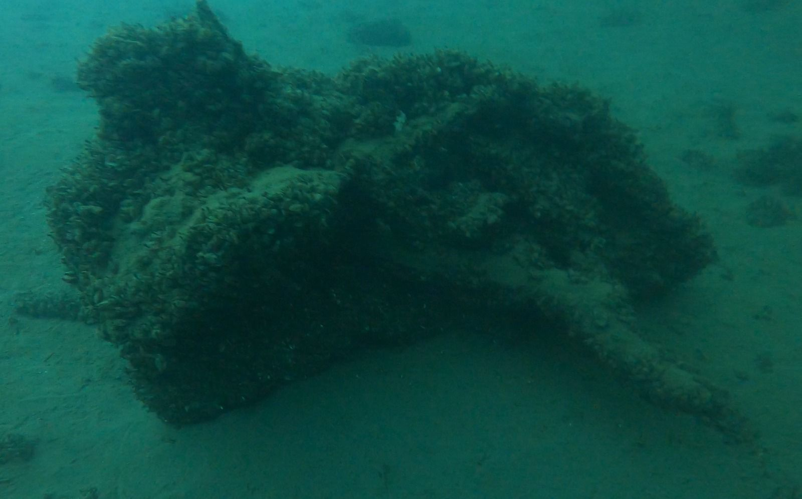

Ein verlässlicher Partner für Städte, Gemeinden und Werke.
Städte, Immobilienabteilungen, Werke und Bäder beauftragen uns für Kontrollen, Suchen und Arbeiten unter Wasser. Wir kennen die Abläufe und liefern, was Sie für Ihre Akten brauchen.
Für wen wir arbeiten
- Tiefbau- und WasserbauämterZustandskontrolle von Brückenpfeilern, Ufermauern, Wehren, Durchlässen und Einlaufbauwerken. Grundlagen für Unterhalts- und Sanierungsplanung.
- Werke und WasserversorgungenKontrolle und Reinigung von Seewasserfassungen, Rechen, Sieben und Leitungen. Befund und Bekämpfung von Muschelbewuchs.
- Immobilien der öffentlichen HandEinsätze an Liegenschaften, Bädern und Anlagen, auch kurzfristig als Intervention bei Störungen.
- Sport- und BadeanlagenArbeiten in Hallen- und Seebädern: Kontrolle, Montage und Suche in Becken und an Einbauten.
- Polizei und FeuerwehrSuche und Bergung von Gegenständen, protokolliert und vertraulich.
- Umwelt- und GewässerschutzLokalisierung von Gefahrstoffen und Altlasten am Gewässergrund mit Positionsangaben.
- Hafen, Schifffahrt und SeepolizeiKontrolle von Bojen, Verankerungen, Stegen und Hindernissen.
Was Sie von uns erwarten können
- Schriftliche Offerte innert 24 StundenAuf Wunsch mit Kostendach. Grundlage ist unsere öffentliche Preisliste.
- Nachvollziehbare AbrechnungEinsatzpauschale, Tauchzeit und Anfahrt, wie offeriert. Zuschläge nur nach Preisliste.
- Dokumentation für die AktenTauchbericht, Fotos, Video und Positionen bei jedem Einsatz.
- Koordination mit anderen StellenAbsprache mit Polizei, Fachstellen, Bauleitung und Schifffahrt.
- VertraulichkeitBefunde und Aufnahmen erhält nur der Auftraggeber.
- Wiederkehrende KontrollenRahmenvereinbarungen für regelmässige Inspektionen möglich.
Für Ihre Beschaffung
- Öffentliche Preisliste 2026 als Referenz für Budget und Offertvergleich
- Allgemeine Geschäftsbedingungen online einsehbar
- Rechnung mit 14 Tagen Zahlungsfrist
- Qualifikationsnachweise auf Anfrage
- ISO-Zertifizierung in Vorbereitung
- Firmenflyer (PDF) für Ihr Dossier

Öffentliche Auftraggeber (Auswahl)
Fragen aus der Verwaltung
Können wir den Einsatz im Voraus budgetieren?
Ja. Mit der öffentlichen Preisliste lassen sich Einsätze grob abschätzen. Verbindlich ist die schriftliche Offerte, die Sie innert 24 Stunden erhalten. Auf Wunsch vereinbaren wir ein Kostendach.
Wer ist bei der Arbeit vor Ort verantwortlich?
Die Tauchgänge leitet unser Einsatzleiter. Er ist Ihre Ansprechperson von der Anfrage bis zum Bericht. Sicherheitsvorgaben für den Einsatzort stimmen wir vorab mit Ihnen ab.
In welcher Form erhalten wir die Ergebnisse?
Als PDF-Bericht mit Fotos und als Mediendateien für Video. Wenn Sie ein bestimmtes Format oder eine Gliederung für Ihre Ablage brauchen, richten wir uns danach.
Sind wiederkehrende Kontrollen möglich?
Ja. Für regelmässige Inspektionen, zum Beispiel jährliche Kontrollen von Fassungen oder Pfeilern, vereinbaren wir gerne eine Rahmenvereinbarung mit festen Konditionen.
Arbeiten Sie auch in Hallenbädern und Becken?
Ja. Neben Seen und Flüssen arbeiten wir auch in Becken von Hallen- und Freibädern sowie in Becken von Werk- und Industrieanlagen.
Offerte für Ihre Stelle
Beschreiben Sie Objekt und Ziel. Sie erhalten eine schriftliche Offerte innert 24 Stunden.